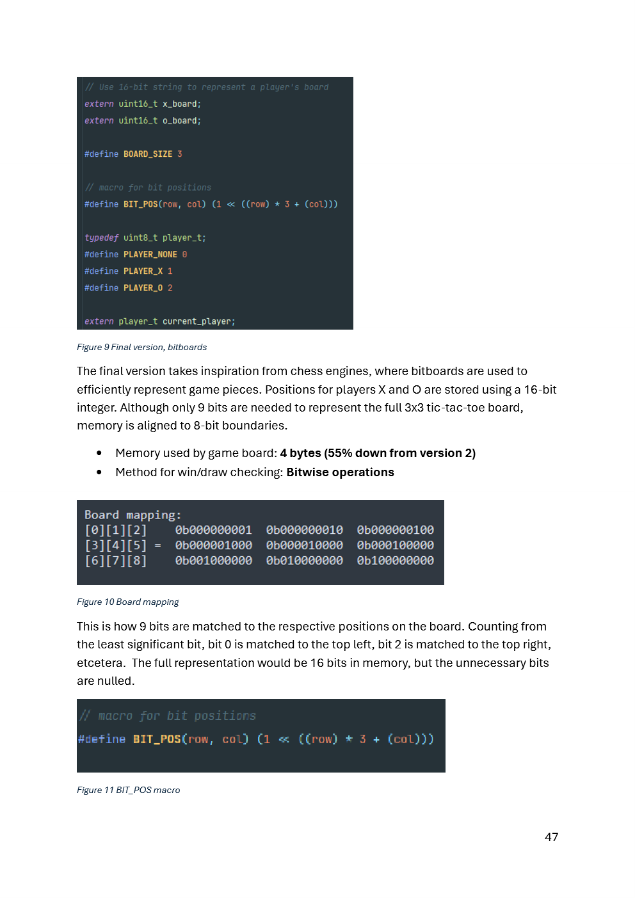

Computer Architecture Mini-Project
A Year 1, Trimester 1 group project for CSC1104 that connected computer architecture theory to practice through direct-mapped cache calculations and a Raspberry Pi tic-tac-toe build that mixed C with ARM64 assembly.

This project was one of my first university systems assignments and it pushed me into much lower-level thinking than the projects I had done before. The coursework combined direct-mapped cache memory calculations with a mixed-language programming task, so we had to understand both the theory and how it translated into actual code behaviour.
As a team, we built a direct-mapped cache calculator that derived block size, number of blocks, total memory capacity, cache lines, and cache capacity from user-provided address bits. The project also included a Raspberry Pi tic-tac-toe build where one C function was replaced with ARM64 assembly, alongside a more memory-efficient bitboard-based game representation.
My contribution centered on the Question 1.2 validation flow. I worked on validating user input, handling invalid and empty values, and debugging issues while learning how assembly-related work could introduce errors like segmentation faults if the logic or registers were not handled carefully.
Project scope
- Built a direct-mapped cache calculator that computed block size, number of blocks, total memory capacity, cache lines, and cache capacity from address-bit inputs.
- Added repeated input validation so impossible, empty, or invalid values would be rejected before calculations were performed.
- Completed the broader mini-project as a group, including a tic-tac-toe build where one C function was replaced with assembly to explore mixed-language programming.
Systems approach
- The tic-tac-toe component used a finite state machine and switch-based main loop to manage menu, play, win, draw, and exit states clearly.
- The final game representation used bitboards, which reduced board-memory usage and made draw or occupancy checks efficient through bitwise operations.
- CMake kept the project structure organized, while Raylib handled rendering and user interaction for the Raspberry Pi build.
My contribution
- Worked on the Question 1.2 user validation logic, including repeated prompting, whitespace handling, numeric checks, and exit handling.
- Helped test edge cases around address-bit constraints so the calculator would not proceed with invalid cache or memory configurations.
- Learned how to debug lower-level issues more patiently, especially when segmentation faults appeared and I had to rely on teammate discussion to resolve them.